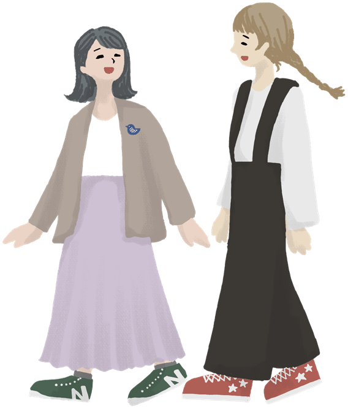
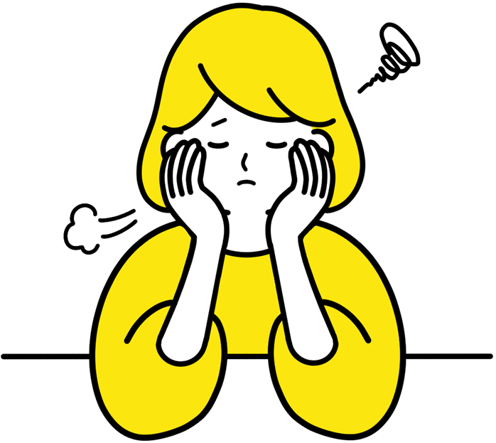

{{ s.en }}
{{ s.name }}{{ s.fac }}
{{ s.quote }}
ある日の過ごし方：{{ s.day }}
キャンパスライフ
授業の外にも、新しい自分に出会う場所があります。施設、行事、サークル、そして在学生の毎日を紹介します。
施設紹介
{{ f.d }}
年間行事

文化系・運動系・ボランティアなど、学生が主体となって運営する団体が活動しています（団体名は例）。

在学生の声
{{ s.quote }}
※ 在学生の声・行事・団体名はサンプルです。